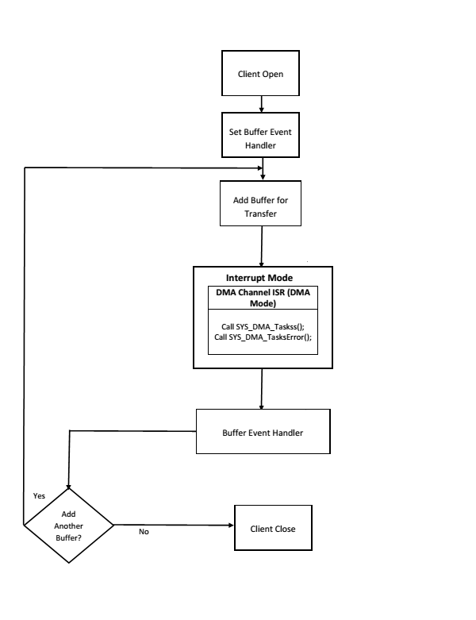

Client Operations - Buffered
Client buffered operations provide a the typical audio interface. The functions DRV_I2S_BufferAddRead, DRV_I2S_BufferAddWrite, and DRV_I2S_BufferAddWriteRead are the buffered data operation functions. The buffered functions schedules non-blocking operations. The function adds the request to the hardware instance queues and returns a buffer handle. The requesting client also registers a callback event with the driver. The driver notifies the client with DRV_I2S_BUFFER_EVENT_COMPLETE, DRV_I2S_BUFFER_EVENT_ERROR or DRV_I2S_BUFFER_EVENT_ABORT events.
The buffer add requests are processed from the I2S channel ISR in interrupt mode.
The following diagram illustrates the buffered data operations

 Note: Note: |
It is not necessary to close and reopen the client between multiple transfers. |
An application using the buffered functionality needs to perform the following steps:
- The system should have completed necessary setup and initializations.
- If DMA mode is desired, the DMA should be initialized by calling SYS_DMA_Initialize.
- The necessary ports setup and remapping must be done for I2S lines: ADCDAT, DACDAT, BCLK, LRCK and MCLK (if required).
- The driver object should have been initialized by calling DRV_I2S_Initialize. If DMA mode is desired, related attributes in the init structure must be set.
- Open the driver using DRV_I2S_Open with the necessary ioIntent to get a client handle.
- The necessary BCLK, LRCK, and MCLK should be set up so as to generate the required media bit rate.
- The necessary Baud rate value should be set up by calling DRV_I2S_BaudrateSet.
- The Register and event handler for the client handle should be set up by calling DRV_I2S_BufferEventHandlerSet.
- Add a buffer to initiate the data transfer by calling DRV_I2S_BufferAddWrite/DRV_I2S_BufferAddRead/DRV_I2S_BufferAddWriteRead.
- When the DMA Channel has finished, the callback function registered in step 8 will be called.
- Repeat step 9 through step 10 to handle multiple buffer transmission and reception.
- When the client is done it can use DRV_I2S_Close to close the client handle.
// The following is an example for interrupt mode buffered transmit #define SYS_I2S_DRIVER_INDEX DRV_I2S_1 // I2S Uses SPI Hardware #define BUFFER_SIZE 1000 // I2S initialization structure. // This should be populated with necessary settings. // attributes dmaChannelTransmit/dmaChannelReceive // and dmaInterruptTransmitSource/dmaInterruptReceiveSource // must be set if DMA mode of operation is desired. DRV_I2S_INIT i2sInit; SYS_MODULE_OBJ sysObj; //I2S module object DRV_HANDLE handle; //Client handle uint32_t i2sClock; //BCLK frequency uint32_t baudrate; //baudrate uint16_t myAudioBuffer[BUFFER_SIZE]; //Audio buffer to be transmitted DRV_I2S_BUFFER_HANDLE bufferHandle; APP_DATA_S state; //Application specific state uintptr_t contextHandle; void SYS_Initialize ( void* data ) { // The system should have completed necessary setup and initializations. // Necessary ports setup and remapping must be done for I2S lines ADCDAT, // DACDAT, BCLK, LRCK and MCLK sysObj = DRV_I2S_Initialize(SYS_I2S_DRIVER_INDEX, (SYS_MODULE_INIT*)&i2sInit); if (SYS_MODULE_OBJ_INVALID == sysObj) { // Handle error } } void App_Task(void) { switch(state) { case APP_STATE_INIT: { handle = DRV_I2S_Open(SYS_I2S_DRIVER_INDEX, (DRV_IO_INTENT_WRITE | DRV_IO_INTENT_NONBLOCKING)); if(handle != DRV_HANDLE_INVALID ) { /* Update the state */ state = APP_STATE_WAIT_FOR_READY; } } break; case APP_STATE_WAIT_FOR_READY: { // Necessary clock settings must be done to generate // required MCLK, BCLK and LRCK DRV_I2S_BaudrateSet(handle, i2sClock, baudrate); /* Set the Event handler */ DRV_I2S_BufferEventHandlerSet(handle,App_BufferEventHandler, contextHandle); /* Add a buffer to write*/ DRV_I2S_WriteBufferAdd(handle, myAudioBuffer, BUFFER_SIZE, &bufferHandle); if(DRV_I2S_BUFFER_HANDLE_INVALID == bufferHandle) { // Error handling here } state = APP_STATE_IDLE; } break; case APP_STATE_WAIT_FOR_DONE: state = APP_STATE_DONE; break; case APP_STATE_DONE: { // Close done DRV_I2S_Close(handle); } break; case APP_STATE_IDLE: // Do nothing break; default: break; } } void App_BufferEventHandler(DRV_I2S_BUFFER_EVENT event, DRV_I2S_BUFFER_HANDLE bufferHandle, uintptr_t contextHandle) { uint8_t temp; if(DRV_I2S_BUFFER_EVENT_COMPLETE == event) { // Can set state = APP_STATE_WAIT_FOR_DONE; // Take Action as needed } else if(DRV_I2S_BUFFER_EVENT_ERROR == event) { // Take Action as needed } else if(DRV_I2S_BUFFER_EVENT_ABORT == event) { // Take Action as needed } else { // Do nothing } } void SYS_Tasks ( void ) { /* Call the application's tasks routine */ APP_Tasks ( ); }
|
MPLAB Harmony Audio Help
|